Nomi, Ishikawa: things to do, food and stays
Nomi · Ishikawa
Nomi
Highlighted on the Ishikawa map.
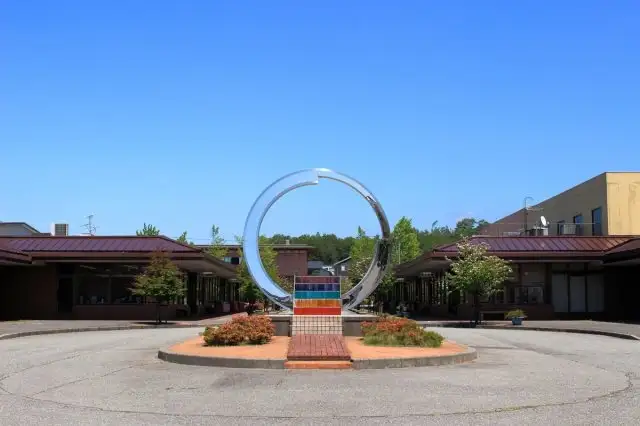
Stay
旅亭 萬葉
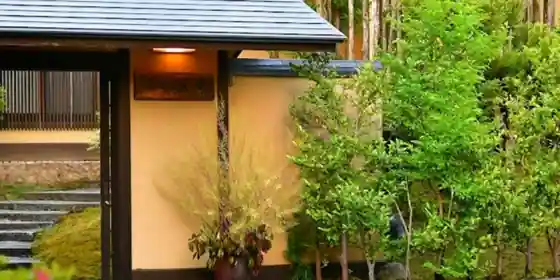
Tabi Tei Manyo
金沢辰口温泉 まつさき
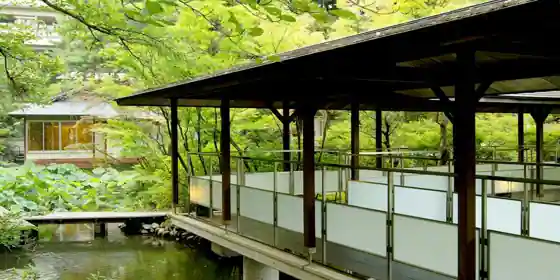
Kanazawa Tatsukuchi Onsen Matsusaki
Inn at Kanazawatatsukuchi Onsen in Tatsukuchi, Nomi.
金沢辰口温泉たがわ龍泉閣 北陸最大級の星空露天
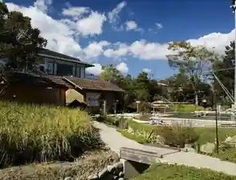
Kanazawa Tatsukuchi Onsen Tagawa Ryusen Kaku Hokuriku Saidaikyu No Hoshizora Roten
Inn at Kanazawatatsukuchi Onsen in Tatsukuchi, Nomi with open-air baths and kaiseki dinners.
金沢・辰口温泉 やさしさの宿 まつさき
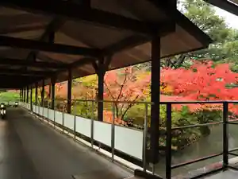
Kanazawa Tatsukuchi Onsen Yasashisano Yado Matsusaki
Inn at Tatsukuchi Onsen in Tatsukuchi, Nomi.
ウェルネスハウスSARAI
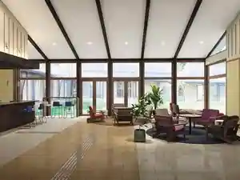
Uerunesu House SARAI
天然温泉 スーパーホテル石川能美根上スマートインター
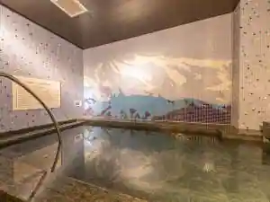
Tennen Onsen Super Hotel Ishikawa Nomi Negami Sumatointa
Dining
まつさき
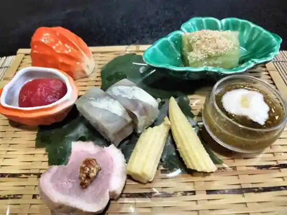
Matsusaki
手取川 竹やぶ
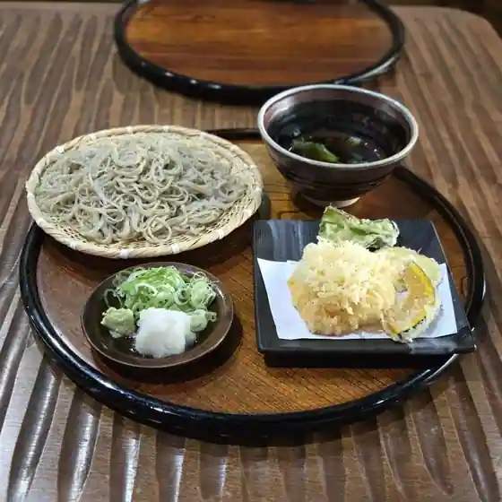
Tedorigawa Take Yabu
麺屋大河 白山麓店
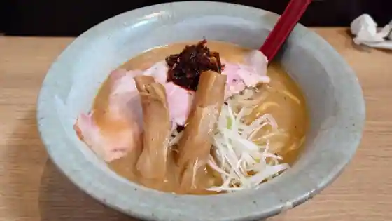
Men Ya Taiga Hakusan Fumoto
さとやまカフェ
Satoyama Cafe
蕎麦処 滝
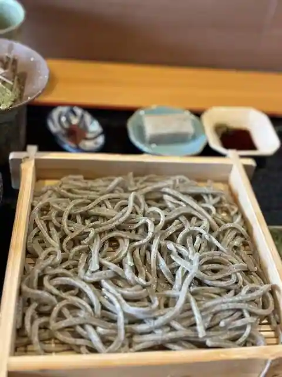
Sobadokoro Taki
ソリッソ
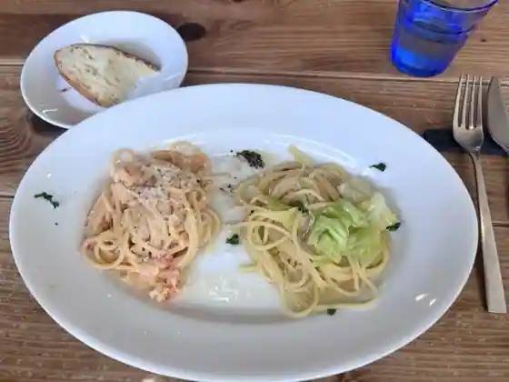
Sorisso
麺屋天
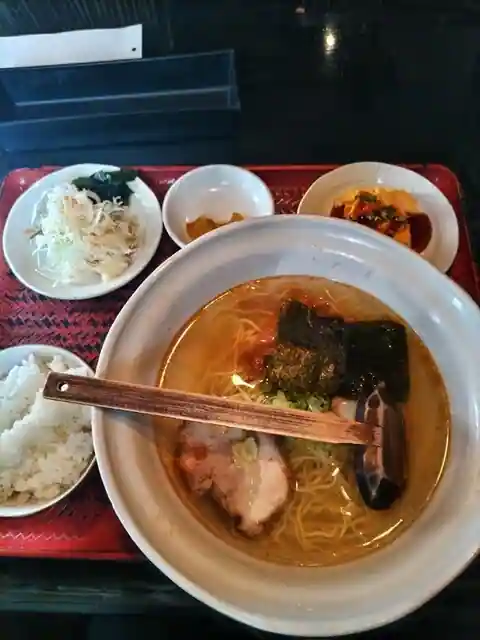
Men Ya
すしべん 能美根上インター店
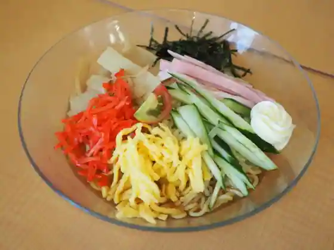
Sushiben Nomi Negami Inta
喜多方ラーメン
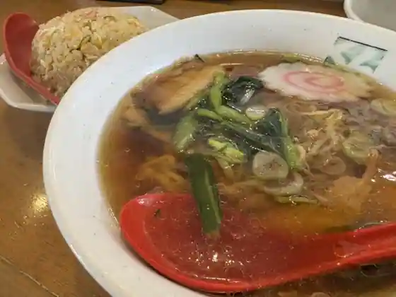
Kitakata Ramen
ブロートルーフ ビオベッカライ
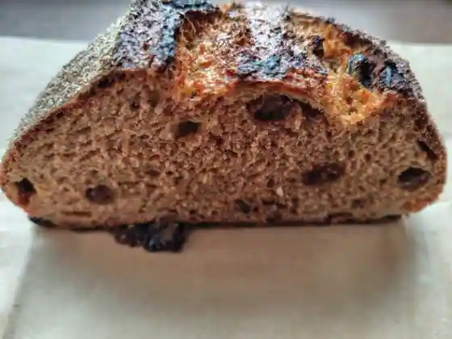
Burotorufu Biobekkarai
イルグラーノ たかぎ
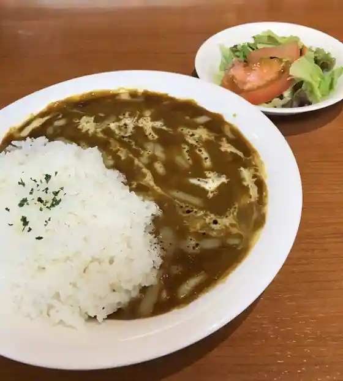
Irugurano Takagi
二兎
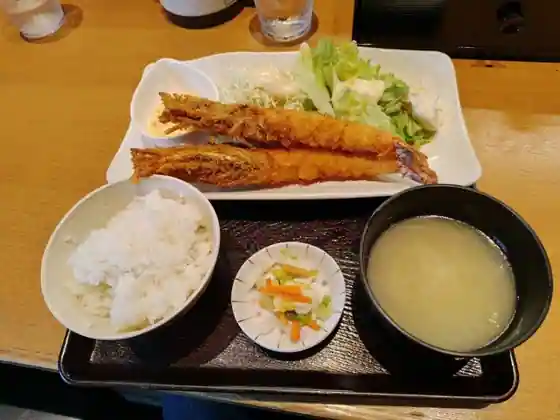
Ni Usagi
ラ・パンセ
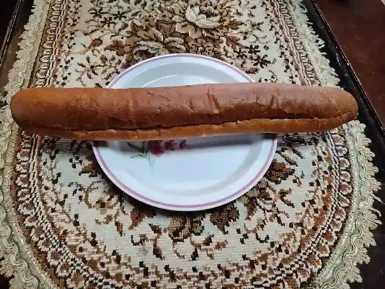
Ra Bakery Se
イタリア料理 イル ボッツォロ
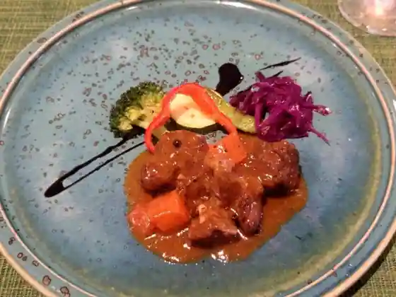
Itaria Ryori Iru Bottsuoro
PATISSERIE Leafrich
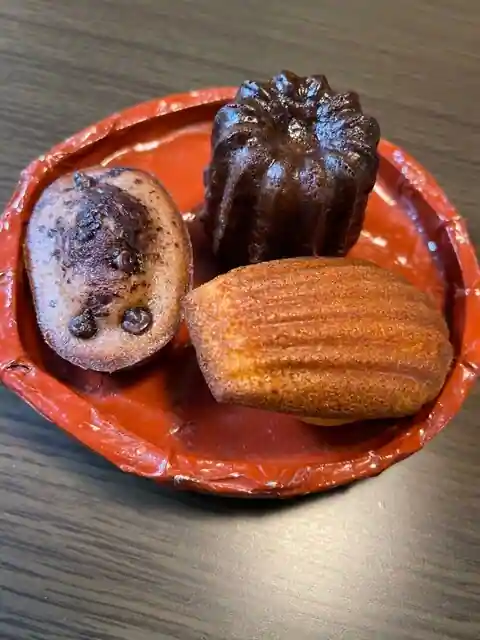
PATISSERIE Leafrich
龍美
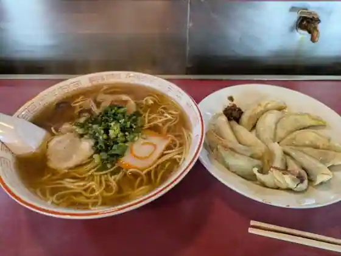
Tatsumi
ア・ターブル
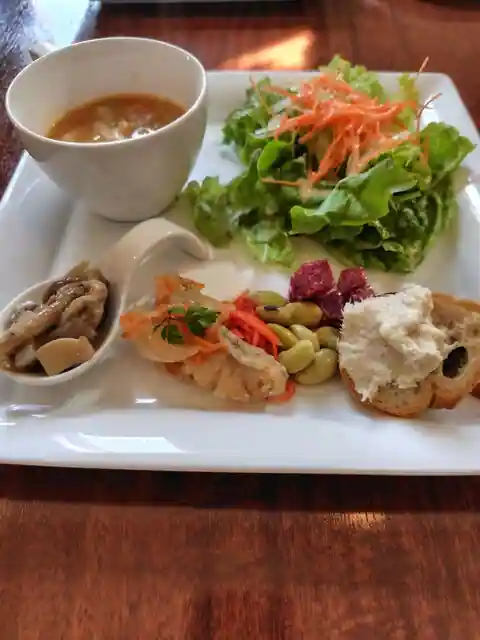
A Taburu
ごえん
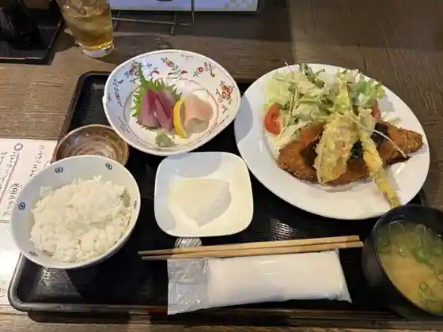
Goen
ハヤシメシ
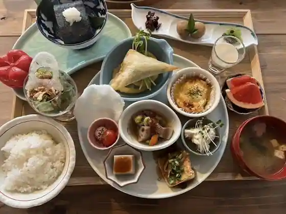
Hayashimeshi
ガネサ
Ganesa
和風中華・手作り餃子の店ひろちゃん
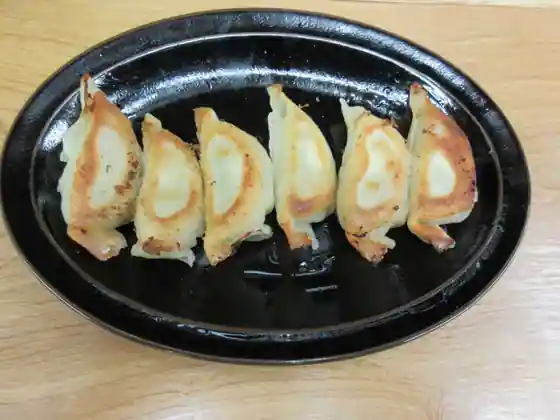
Wafu Chuka Tezukuri Gyoza No Mise Hirochan
たがわ龍泉閣
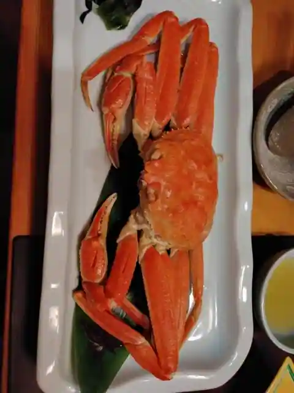
Tagawa Ryusen Kaku
百年の家カフェ 燈
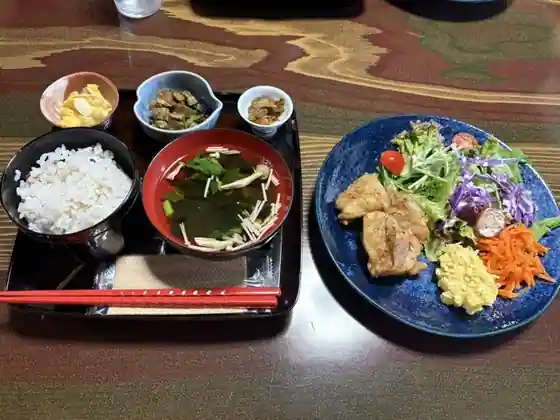
Hyakunen No Ie Cafe To
ジュノー1980
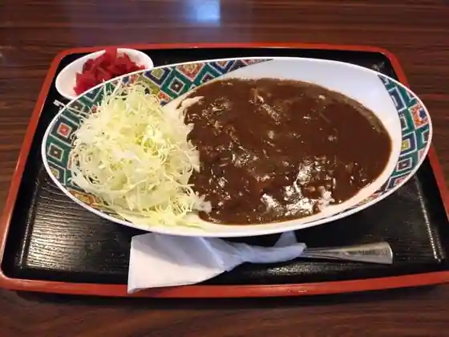
Juno 1980
Sights
Roadside Station Shirayamasan
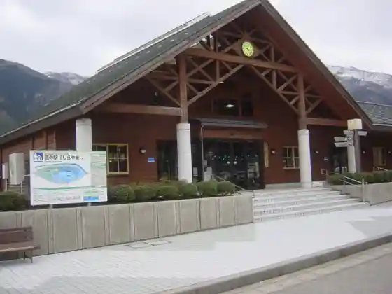
Tatsukuchi Onsen Soyu Satoyama Baths
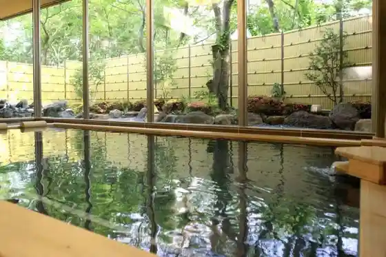
Ishikawa Zoo
Tedori Fisshu Land
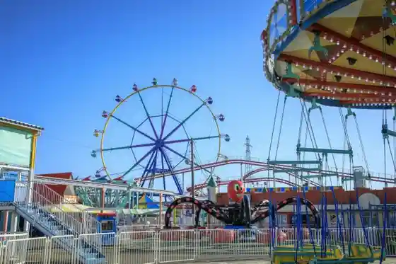
Nomi Negami Suigaoka Ikoi no Plaza
Tatsukuchi Kyuryo Park
Kutani Togei Village
Kani Fuchi
Nomi Monomi Yama Sports Park
Adobencha Garden Nomi
Matsui Hideki Besuboru Museum
Nomi Furusato Museum
Kutani Yaki Urutoramanshiriizu Etsuke Ke Experience
Nanatsu Taki
Nomi Bosai Center
Yarimizu Kannon Reisui Do
Kyu Rikukaigun Gunso Tenjikan
Kannon Yama Haikingukosu
Nomi Negami Fureai Puru
Miyamoto Shuzo Mise
Tatsukuchi Ho Ranch
KAM Nomi Kutani Yaki Art Museum | Taiken Kan |
Wadayama Matsuji Yama Shiseki Park
Aki Jozan Shiseki Park
Nomi Tatsukuchi Onsen Ashiyu
Sano Kutani Toso Shrine
Kenko Rodo (Kyu Hokurikutetsudo Nomi Senzoi Sen)
KAM Nomi Kutani Yaki Art Museum | Gosai Kan |
Ishikawa Saiensu Park
Komatsu Matere
Shu Fuku Tera
Negami Matsu Genpei Kosenjo Ato
Negami Gakushu Center
Nomi Izumi Dai Park
Nomi Terai Rojin Fukushi Center (Kame Rei So)
no Miden Plaza
Kokuzo Yama Castle Ruins
KAM Nomi Kutani Yaki Art Museum | Asazo Goju Kichi Memorial Museum |
Nomi Burial Mound Gun
Ishikawaken Kutani Tojiki Shokogyo Kyodokumiai Rengokai
JA Negami Seikatsu Shizai Kan
Nomi Village Yama Gaidohaiku
Yoshimitsu no Ichiri Tsuka